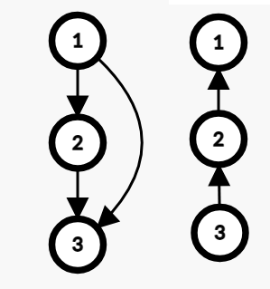

拟阵初级学习笔记
建议直接去看原论文，哪篇论文放在参考文献了。
前排提示，本篇中对于集合操作 $+$ 和 $\cup$ 没有区分，都表示并的意思，$-$ 和 $\setminus$ 同理。
拟阵的入门
定义
幂集
$2^S$ 称作 $S$ 的拟阵当且仅当 $2^S$ 是 $S$ 所有子集构成的集合。
例如：$\{1,2\}$ 的幂集是 $\{\{1,2\},\{1\},\{2\},\emptyset\}$ 。
拟阵
记 $M=(S,\mathcal{I})$ 表示一个定于在有限集合 $S$ 且独立集的集合为 $\mathcal{I}$ 的当且仅当满足以下三条：
- $\mathcal{I}\subset 2^S$
- 遗传性 ：如果 $J\subset I\in \mathcal{I}$，那么 $J\in \mathcal{I}$ 。
- 交换性/扩张性 ：如果 $I,J\in\mathcal{I},|J|<|I|$，那么 ${\exists}z\in J\setminus I , I\cup z\in \mathcal{I}$ 。
为了方便，我们一般认为 $\emptyset \in \mathcal{I}$ ，即认为独立集的集合是非空的。
我们称 $\mathcal{I}$ 的元素为独立集。
例子：
均匀拟阵 ：$U^k_n=(S,\mathcal{I})$，其中 $|S|=n,\mathcal{I}=\{I\subset S : |I| \le k \}$ 。
图拟阵 ：令无向图 $G=(V,E)$，令图拟阵：$M=(E,\mathcal{I})$ ，其中 $\mathcal{I}=\{F\subset E : F 无环\}$ 。
为啥是拟阵这件事不难自证，不再赘述。
图拟阵非常的重要，因为他提供了一个形象想象拟阵的工具，在前期学习拟阵在图拟阵上想想是非常有用的方法。
不过图拟阵在有向图上不一定成立，一样的定义，只不过把无向图换成有向图。

匹配拟阵 ：令无向图 $G=(V,E)$，匹配拟阵：$M=(V,\mathcal{I})$ ，其中一个点集是独立集当且仅当存在一个匹配能够覆盖点集中的所有点（可以覆盖点集外的点）。
遗传性显然，交换性不会。
拟阵同时还可以与高代联动，对于一个有限的向量空间，一个独立集定义为线性无关的向量组，非常有意思的是，此时下面基的定义就是高代中基的定义，环是最小的线性相关的向量组，而引理1.2对应的就是基扩张定理。（从这个角度来看，很多拿到一个子空间的极大独立集，直接扩张成大空间的极大独立集的证明，突然就熟悉多了，这也能与课内联动？）
这么说的话，用线性空间来作为拟阵的例子辅助思考貌似也是一个不错的选择。
坑1
不会交换性的证明。
基
独立集 $I$ 是基当且仅当加入 $S/I$ 中的任何一个元素都不是独立集。
这种拟阵中的极大元素，在拟阵的研究中发挥着至关重要的作用。
环
一个非独立集 $I’$ 是环当且仅当 $I’$ 删除其中任意一个元素都是独立集。
例子：图拟阵中的简单环。
我们用 $C(M)$ 表示拟阵 $M$ 中所有的环。
性质
引理 1.1 ：基的大小相同。（用交换性显然）
引理 1.2 ：${\forall} J \in \mathcal{I},{\exists} 基I:J\in I$ 。（用交换性显然）
该引理说明任意一个元素都属于一个基，所以对于一个拟阵，只要知道基，加上遗传性就可以知道所有独立集。
但是能不能凭借此定义独立集的集合呢？
还需要一个定理：
定理 1.3(基交换定理) ：${\forall}基A,B,A\ne B,{\forall} z\in A\setminus B,{\exists} y\in B\setminus A:A-\{z\}+\{y\}\in \mathcal{I}$ 。（用遗传性显然）
满足基交换定律且大小相同的基的集合可以定义一个拟阵。（可以证明交换性成立，并不困难，在此不再赘述，证明过程类似【完美匹配那个证明】）
这种定义相较于原来定义的优势在于检验拟阵的工作量小了，本来对于每一对独立集都要检验，现在只需要检验基，尤其是对于自己随手写的拟阵，例如：$\{\{1,3,4\},\{2,3,4\}\}$ 。
补充
完美匹配定理的编号。
坑2
其实我觉得这里的大小相同的限制可以改得再弱一点：基之间没有包含关系，我严重怀疑没有包含关系可以推出大小相同，但是水平有限，目前我证不出来。
基交换定理可以放宽一下条件，仍然成立：
${\forall}A,B\in \mathcal{I},|A|\le|B|,{\forall} z\in A,{\exists} y\in B\setminus (A-\{z\}):A-\{z\}+\{y\}\in \mathcal{I}$ 。
引理 1.4 ：$I$ 不是独立集，则一定有一个子集是环 。（显然）
引理 1.5 ：${\forall}X,Y\in C(M),X\subset Y:X=Y$ 。（显然）
引理 1.6 ：${\forall}X,Y\in C(M),X\ne Y,e\in X\cap Y:{\exists} C\in C(M),C\subset X\cup Y-\{e\}$ 。
证明
等价于证明 $X\cup Y-\{e\}$ 不是独立集。
证明一个集合不是独立集，思考一下条件：环、一个已知的集合。因此我们考虑利用这个已知的集合用反证法，通过构造与环产生矛盾。
反证法：已知 $X\cap Y \in \mathcal{I}$ ，然后用 $X\cup Y-\{e\}$ 扩大这个集合到同样的大小，由于环的限制， $X\setminus Y,Y\setminus X$ 都要丢掉一个元素，所以集合大小最大是 $|X|+|Y|-2$ ，然而可以扩展到 $|X|+|Y|-1$ ，矛盾，证毕。
至于更加严谨的写法，这里引用一下2018国集论文（根据引理编号对内容做了一点更改）：
证明：由引理 1.5 可得， $X\setminus Y$ 非空，设 $f \in X\setminus Y$ 。假设 $X\cup Y − \{e\}$ 是独立集。由于 $X$ 是环，
所以 $X − \{f\}$ 是独立集，假设 $X\cup Y$ 中最大的包含 $X − \{f\}$ 的独立集是 $Z$ 。由于 $Y$ 不是独立
集，所以 $Y \not\subset Z$ 。由此可得 $|Z|\le |X\cup Y − \{f\}| − 1 \le |X \cup Y| − 2 < |X \cup Y − \{e\}|$ 。因为 $Z$ 已经
是最大的独立集了，所以 $X\cup Y − \{e\}$ 不可能是独立集（否则由交换性可以扩大 $Z$ ），命题得证。
引理 1.7 ：$I$ 是基，$e\notin I$ ，那么 $I+\{e\}$ 包含一个唯一的环。
证明
至少有一个环是显然的，每个环都有 $e$ 是显然的。
引理 1.6 告诉我们只要有两个环，就可以构造出不含 $e$ 的环，所以至多只有一个环。
证毕。
秩函数
定义
对于拟阵 $M=(S,\mathcal{I})$ ，基的元素的个数称为拟阵的秩，对于任意一个 $U\subset S$，定义秩函数 $r(U)$ 表示 $U$ 中极大独立集的大小。
性质
定理 2.1(有界性) ：${\forall}U\subset S, 0\le r(U)\le|U|$
定理 2.2 (单调性) ：${\forall}A\subset B\subset S,r(A)\le r(B)$
定理 2.3 (次模性) ：${\forall}A,B\subset S,r(A\cup B)+r(A\cap B)\le r(A)+r(B)$
定理1,2都是显然的，下面证明定理3。
证明
首先，我们使用构造方法，证明一个集合的秩的下界是更加容易的（构造一个独立集总比说明独立集大小的上界要容易得多），根据这个方向，我们得到这个证明：
先找到 $A\cap B$ 的极大独立集，然后用交换性扩大成 $A\cup B$ 的极大独立集，然后把扩大的部分，按照 $A\setminus B,B\setminus A$ 分成两部分，和 $A\cap B$ 的极大独立集合成 $A,B$ 的独立集，然后就证完了。
更加严谨的写法看国集论文，这里懒得复制粘贴了，思路是一样的。
那么问题来了，我们能否用秩函数定义拟阵？答案是：可以。
如果我们有一个函数 $r$ ；$2^S\to \mathbb{Z}$，定义 $\mathcal{I}={I:r(I)=|I|}$ 。
遗传性证明
在遗传性的证明中，我们更希望证明一个集合是独立集，也就是证明 $r(I)=I$ ，显然，我们其实是需要证明 $r(I)\ge I$ ，所以在证明中应该更多的将目标集合放在 $\le$ 的右边。
$A=J,B=I\setminus J$，即可证明。
交换性证明
在交换性的证明中，由于找到具体哪个集合是独立集有点困难，采用反证，则考虑限制集合秩的上界，去证明大集合（$I$）并不是独立集，此时把目标集合（$I$）放在 $le$ 左边限制上界。
令 $\{b_1,b_2,…,b_n\}=I\setminus J$
考虑 ：$A=J+\{b_1\},B=J+\{b_2\}$，则可以证明 $r(J+\{b_1,b_2\})=|J|$，然后将其作为新的 $A$，令 $B=J+\{b_3\}$ ，不断往下做，直到合成出 $I\cup J$ 为止，此时 $r(I\cup J)=|J|<|I|=r(I)$ ，矛盾，证毕。
说点抽象的话：
事实上，定理 3 变换一下可以得到另外一个形式：$r(A\cup B)-r(A)\le r(B)-r(A\cap B)$ ，然后变个符号：$r(A\cup C)-r(A)\le r(B\cup C)-r(B),B\subset A$ 。
在面对一个集合时，小集合的增量要不劣于大集合的增量，这说明小集合比起大集合具有更大的增长潜力，在后面闭包算子中会反复提及这一点。
当然，对于这一点，可以这么理解，现在假设有个空集，他可以到达任何的基，但是随着元素一个个被确定，能到达的基越来越少，选择也越来越少，因此增长潜力也在减小，极端的，当为基的时候，没有选择，增长不了，增长潜力达到最低值。
拟阵最优化
问题
定义函数 $w:S\to \mathbb{R}$ ，定义一个集合的权值为：$w(I)=\sum\limits_{e\in I}w(e)$，找 $\mathcal{I}$ 中最大的 $w(I)$ 。
例子：最小生成树。
算法
最小生成树plus版
以下先默认权值非负，因此显然权值最大的基就是权值最大的独立集。
- 把 $S$ 中的元素按照从大到小的顺序排序，记作 $s_1,s_2,s_3,…,s_n$ 。
- 维护一个集合 $I$ ，初始为空，按顺序考虑 $s_i$ ，如果 $I$ 加上 $s_i$ 是独立集就加入，否则就不加入。
证明
没看懂论文第二步的证明，自己瞎掰了一个。
记 $U_i=\{s_1,s_2,…,s_i\}$，$I_i$ 为考虑完 $s_i$ 后的 $I$ 。
$|I_i|=r(U_i)$ ，否则$|I_i|$ 可以扩大，加入的元素为 $s_j(j\le i)$ ，则一定会在考虑到 $s_j$ 的时候加入该元素，矛盾，所以成立。
所以最后 $I$ 是一个基。
考虑把每个独立集用其所含元素的下标从小到大呈现，例如：$\{1,2,4\}$ 表示其含有 $s_1,s_2,s_4$ 。
那么对于 $I$ ，假设其呈现出来是：$a_1,a_2,…,a_t$ , 对于任意一个基而言，是：$a’_1,a’_2,…,a’_t$ ，那么显然有 $a_i\le a’_i$ ，则显然 $I$ 是权值最大的基。
事实上，同样的证明方法，不一定要 $I$ 是基，可以扩展，当 $|I|$ 的大小为 $t$ 时，$I$ 就是所有大小为 $t$ 的独立集中权值最大的。
所以就算权值是非负的，如果指定了目标独立集的大小，仍然可以用此算法。（不过如果已经指定了大小，令总体权值加减一个数字只会让答案改变 $siz*val$，也能把问题转化到非负情形下）
但是如果权值可以是负数呢？
显然当 $s_i\le 0$ 时推出就行了，显然正确，考虑答案只可能出在 $I_i$ 就行了。（显然，$I_i$ 是同集合大小的独立集中权值最大的，只考虑他就行了）
拟阵交
问题
对于 $M_1=(S,\mathcal{I}_1)$，$M_2=(S,\mathcal{I}_2)$ ，定义 $M_1,M_2$ 的交是所有 $I$ 的集合 ，$I$ 满足在两个集合中都是独立集。
首先，拟阵的交是拟阵吗？不是。
反例：$S=\{1,2,3\},\mathcal{I}_1=\{\emptyset,\{1\},\{2\},\{3\},\{1,2\},\{1,3\}\},\mathcal{I}_2=\{\emptyset,\{1\},\{2\},\{3\},\{1,2\},\{2,3\}\}$ 。
交为：$\{\emptyset,\{1\},\{2\},\{3\},\{1,2\}\}$
显然不是拟阵。
不过拟阵交虽然不是拟阵，但是显然是个集合，那问题来了，这个集合中大小最大的独立集有多大？并且求出一个合法解。
这个问题在两个拟阵的交时有多项式求法，但是三个以上是 NP-hard 的。
所以接下来的讨论默认是两个拟阵的交。
定义
闭包算子
对于 $A\subset S$ ，我们定义 $A$ 的闭包算子 $cl(A)=\{e\in S : r(A\cup \{e\})=e(A)\}$ 。
也就是加入后不会影响 $A$ 的秩的元素。
一个显然的事情：$A\subset cl(A)$ 。
交换图
对于 $I\in \mathcal{I}$，定义一个二分图，一边是 $I$ ，一边是 $S\setminus I$ ，存在边 $(x,y)(x\in I,y\in S\setminus I)$ 当且仅当 ：$I-\{x\}+\{y\}\in \mathcal{I}$ 。
称此二分图为 $I$ 的交换图，记作 $D_M(I)$ 。
性质
引理 4.1 ：如果 $A\subset B$ ，那么 $cl(A)\subset cl(B)$ 。
证明
兄弟，来一个极其富有高代特色的证明。
对于任意一个 $z\in cl(A)$ ，找到 $A$ 的一个极大独立集，然后在 $B+\{z\}$ 中扩大，那么一定会得到一个不含 $z$ 的极大独立集，所以 $z$ 不会扩大 $B$ 的秩。
这个证明用到了一个显然正确的结论：如果加入 $z$ 后，存在一个极大独立集不包含 $z$ ，那么 $z$ 一定在该集合的闭包算子中，否则不在。
论文采用秩函数证明：
$r(A+\{z\})+r(B)\ge r((A+\{z\})\cap B)+r(B+\{z\})\ge r(A)+r(B+\{z\})$ 。（也可以由 $r(A+\{z\})-r(A)\ge r(B+\{z\})-r(B)$ 得到，这个式子在上面的次模性的变形中给出过）
又 $r(A+\{z\})=r(A)$ ，所以 $r(B)\ge r(B+\{z\})$，所以 $r(B)=r(B+\{z\})$ ，证毕。
这个定理同样反映了小集合比大集合更加具有增长潜力，一个元素对小集合没有贡献，那么对大集合同样没有贡献。
引理 4.2 ：$A\subset S,e\in cl(A)$ ，那么 $cl(A)=cl(A\cup \{e\})$ 。
证明
${\forall} z \in cl(A\cup \{e\}),r(A)=r(A+\{z\})=r(A+\{e,z\})$，则 $r(A)\le r(A+\{z\})\le r(A+\{e,z\})$ ，所以 $r(A)=r(A+z)$ ，证毕。
人话讲就是，如果加到大集合秩不变，由于大集合秩等于小集合，大集合的秩本来就比小集合大，如果小集合变大了，就比大集合大了，所以加入到小集合中秩也不能变大。
所以如果 $r(A)=r(B),A\subset B$，那么 $cl(A)=cl(B)$ 。（引出下文）
引理 4.3 ：$cl(A)=cl(cl(A)),r(A)=r(cl(A))$ 。（反复用 引理 4.2 就行了）
上面两个引理说明了个什么事呢？（包括证明过程）
显然的事情：
- $A\subset B,r(A)=r(B)$，那么 $cl(A)=cl(B),B\setminus A \subset B\subset cl(B)=cl(A)$ 。（秩相同则 $cl$ 相同）
- ${\forall} B\subset cl(A):cl(A\cup B)=cl(A),r(A\cup B)=r(A)$ 。（这一条主要是对引理4.3的扩展）
- $A\subset B,cl(A)=cl(B):r(A)=r(B)$ 。（因为 $B\subset cl(B)=cl(A)$，所以 $r(B)=r(A\cup B)=r(A)$ ）（ $cl$ 相同则秩相同）
因此，如果子集之间相互包含，那么秩相同和 $cl$ 相同同时成立，也很符合直觉，集合变大，秩不变，那一定是你一直在加一些没有贡献的元素进来。同时，加入没有贡献的元素进来，也并不会改变没贡献的元素的集合，也就是说没贡献的元素之间不会产生联动，突然就产生贡献了，没用就是一直没用，直到秩增大。
这几个引理还可以从另外一个视角看：若 $C\subset cl(B)$ ，$B\subset cl(A)$ ，那么 $C\subset cl(A)$ ，这体现了闭包的传递性。
这也说明了一个事情：在产生秩增量这件事情上， $B$ 没用，$C$ 一定没用，$C$ 有用，$B$ 一定有用，也就是说某种程度上讲 $B$ 覆盖了 $C$ 的功能，这在后面的某些证明中有所体现。
在图拟阵中的一个体现就是：$(x,y)$ 和一个简单路径 $x\to y$ 形成了一个简单环，$(x,y)$ 的作用是有他在的边集合中，最大的独立集 $x,y$ 一定是联通的，而 $x\to y$ 一样能办到这件事。（此时 $(x,y)\in cl(x\to y))$）
注意一个特殊的集合：环，对于环 $I’,{\forall} z\in I’:z\in cl(I’-\{z\})$ ，这在后面的证明中会用到。
定理 4.4(强基交换定理) ：对于两个不同的基 $A,B$ ，${\forall}x\in A\setminus B,{\exists} y\in B\setminus A : A-\{x\}+\{y\},B-\{y\}+\{x\}$ 都是基 。
证明
先写论文的证法：
将 $x$ 加入 $B$ 中得到一个环 $C$ 。
则 $x\in cl(C-\{x\})$ ，则 $x\in cl((A\cup C)-\{x\})$ ，那么 $cl((A\cup C)-\{x\})=cl(A\cup C)$ ，所以 $r((A\cup C)-\{x\})=r(A\cup C)$ ，综上，存在 $y\in C-\{x\}$ ，满足 $A-\{x\}+\{y\}$ 是基，同时因为 $y$ 是环中的一个元素，所以 $B-\{y\}+\{x\}$ 也是环中的一个基。
这里其实就是用 $C-\{x\}$ 去代替 $x$ 的作用，然后找到是哪个元素起到了作用，将他作为 $y$ 。
当然，可以从染色的视角去看这个问题：
如果把这个问题放在图拟阵，也就是 $A$ 的一条边 $(x,y)$ 放到 $B$ 中，然后需要我去证明在 $B$ 的环中存在一条不是刚刚加入进来的边，满足能够填补 $A$ 的空缺。（一般的，我们认为 $A,B$ 都是生成树，就算是生成森林，边所在的联通块是一致的）
那么把 $A$ 中 $(x,y)$ 切断，与 $x$ 联通染蓝色， $y$ 联通染红色，显然，$B$ 中与 $(x,y)$ 形成环的路径上一定存在一条边，一端红色，一端蓝色，他就是我们要找的边。（因为路径两端一端红色，一端蓝色）
但是对点染色貌似和拟阵没什么关系，但是不妨换个角度看，我们要找的是路径上两端异色的边，所以我们不妨对边也染色，两端同色染为白色，异色染为黑色，观察一下这是什么？这就是 $cl(A-\{x\})$ ，也就是说 $cl$ 其实可以看成一种染色，无用染白，有用染黑。
有了这个想法，证明就轻松多了，显然在图拟阵中，一个环不能只有恰好一条黑边，否则从 $x$ 的联通块走黑边到达 $y$ 联通块，就没有另外一条黑边走回来了，与简单环的定义矛盾。所以去掉这条黑边是一个独立集（环的定义），加上这条黑边还是个独立集，与环矛盾，证毕。
用拟阵的话就是：反证法，如果 $C-\{x\}\subset cl(A-\{x\})$ ，那么 $x\notin cl(A-\{x\})$ ，则 $x\notin cl(C-\{x\})$ ，与环的定义矛盾，证毕。
所以 $cl$ 某种角度上可以算是拟阵的染色法。（先从图拟阵的角度思考是有道理的，直观）
当然，由上面的证明过程，可以放宽定理条件：$A,B$ 不一定得是基，只要满足 $|A|\le|B|$ 即可。
即：
${\forall}A,B\in \mathcal{I},|A|\le|B|,{\forall} x\in A,{\exists} y\in B\setminus (A-\{x\}):A-\{x\}+\{y\}，B+\{x\}-\{y\}\in \mathcal{I}$ 。
证明
$B+\{x\}$ 不是独立集就类似上面证明就行了，小改即可。
是独立集，则 $|B+\{x\}|=|B|+1>|A|$ ，则有交换性，存在 $y\in B:A+\{y\}\in\mathcal{I}$ 。
则 $A+\{y\}-\{x\}\in \mathcal{I}$ 。
这里还有个非常有意思的想法，用上面的思路证完 $|A|=|B|$ 的情况，然后对于 $|A|<|B|$ 的情况，先用 $B$ 把 $A$ 扩大到相同大小，然后强交换，由于用于扩大的集合是两个集合的交集，所以不会出现在 $x,y$ 中，所以可以直接用遗传性再缩小回去，从而完成 $|A|<|B|$ 的证明。
但是上面的思路可以直接把两种情况都证了，也就不需要多此一举了。
引理 4.5 ：对于独立集 $I,J,I\ne J,|I|=|J|$ ，则 $I\setminus J$ 与 $J \setminus I$ 存在完美匹配。
证明
很有意思的构造性解，反正我没有证出来，思路确实新奇，小清新构造。（mad，没有证出来真TM不爽）
对于元素 $y\in J\setminus I$ ，由强交换定理可知存在 $x\in I\setminus J$ ，使得 $I-\{x\}+\{y\},J-\{y\}+\{x\}$ 仍然是独立集。
则认为 $x,y$ 匹配，然后令 $J=J+\{x\}-\{y\}$ ，接着构造，直到 $I=J$ ，构造完毕。
引理 4.6 ：对于独立集 $I$ 和集合 $J,I\ne J,|I|=|J|$ ，且 $I\setminus J$ 与 $J \setminus I$ 存在唯一的完美匹配，则 $J$ 也是独立集。
证明
显然，要直接证明 $J$ 是不是独立集这件事情非常的困难，所以我的思路是构造+归纳，通过已有的信息，把 $I$ 构造出 $J$ 。
我们考虑把 $I\setminus J$ 换成 $J\setminus I$ 的一个元素，变成 $I’$ ，使得 $I’$ 与 $J$ 仍然只存在唯一的完美匹配。
考虑对于 $(x,y),x\in I\setminus J,y\in J\setminus I$ ，如果 唯一匹配是 $(x,y)$ ，则认为是 $x\to y$ ，否则认为是 $y\to x$ ，由于无环，所以是拓扑图。（因为是唯一匹配，所以无环，唯一匹配这个信息，显然是要往无环的角度去靠）
所以一定存在一个点 $x\in I\setminus J$ ，$x$ 没有入边，即在由 $I\setminus J$ 与 $J\setminus I$ 的导出子图中，$x$ 只有一条边。
考虑直接把 $x$ 换成与他匹配的 $y$ 。
不难证明（用交换性搞搞就行了），在 $D_M(I’)$ 中 $I’\setminus J$ 与 $J\setminus I’$ 的导出子图中的边一定在 $D_M(I)$ 中出现，同时 原来的匹配边也一定在新的导出子图中，所以仍然是唯一匹配。（匹配边还在，非匹配边减少了）
然后归纳就行了。
不过论文给了种更加简单的证明，不过我觉得本质应该差不多。
首先把匹配写成 $(x_1,y_1),(x_2,y_2),…,(x_t,y_t)$ 的形式，一般的，当 $i<j$ 时， $x_i,y_j$ 没有边。（把 $x$ 按照拓扑序从小到大排就行了）
然后假设 $J$ 不是独立集，那么就存在环，假设为 $C$ ，并且其中下标最小的是 $y_i$ （显然一定有 $J\setminus I$ 的元素）。
考虑 $I-\{x_i\}$ ，那么 $C-y_i\subset cl(I-\{x_i\})$ ，又 $y_i\subset cl(C-y_i)\subset cl(cl(I-\{x_i\}))=cl(I-\{x_i\})$ ，这与 $x_i,y_i$ 匹配矛盾，证毕。
本质上就是 $C-\{y_i\}$ 能够替代 $y_i$ 的功能，但是由唯一匹配可以导出不能替代，从而导致了矛盾。
引理 4.7 ：$I,J\in \mathcal{I},|I|=|J|,{\forall} z\in J\setminus I,I+\{z\}\notin\mathcal{I},x\in S\setminus I,I+\{x\}\in \mathcal{I}$ ，那么 $J+\{x\}\in \mathcal{I}$ 。
证明
$J\setminus I\subset cl(I)$ ，如果 $x\in cl(J)$ ，那么 $x\in cl(I)$ ，矛盾，证毕。
定理 4.8(最小最大定理) ：$\max\limits_{I\in \mathcal{I_1}\cap\mathcal{I_2}} |I|=\min\limits_{U\subset S}(r_1(U)+r_2(S\setminus U))$
这里证明 $\le$ 是显然的，$|I\cap U|\le r_1(U)$ ，另一边同理，加起来就行了。
但是证明相等比较麻烦，后面在算法中用构造性方法证明。
算法
现在给出算法流程。
现有集合 $I,X_1=\{x\in S\setminus I:I+\{x\}\in \mathcal{I_1}\},X_2=\{x\in S\setminus I:I+\{x\}\in \mathcal{I_2}\}$ ，初始时 $I=\emptyset$ 。
定义交换图（有向图） $D_{M_1,M_2}(I)$ 为 ：
- $x\in I,y\in S\setminus I$ ，如果 $(x,y)\in D_{M_1}(I)$ ，那么 $x\to y\in D_{M_1,M_2}(I)$ 。
- $x\in I,y\in S\setminus I$ ，如果 $(x,y)\in D_{M_2}(I)$ ，那么 $y\to x\in D_{M_1,M_2}(I)$ 。
重复进行算法流程：
- 在 $D_{M_1,M_2}(I)$ 找到一条起点属于 $X_1$ ，终点属于 $X_2$ 的最短路 $P$。（没有就结束算法）
- 令 $I=I∆P$ 。（ $∆$ 表示集合的对称差操作）
最后得到的 $I$ 就是一个最大大小的拟阵交，同时 $U=\{x\in S:x 在D_{M_1,M_2}(I)能够到达 X_2 中的点\}$ 。
这个算法的正确性要证明两件事：
- $I$ 为什么仍然是拟阵交。
- 为什么 $|I|=r_1(U)+r_2(S\setminus U)$ 。
证明1
先证明新的 $I\in \mathcal{I_1}$ 。
令路径 $P=\{y_0,x_1,y_1,…,y_t\}$ ，令 $J=I-\{x_1,x_2,…,x_t\}+\{y_1,y_2,…,y_t\}$ ，由最短路可以导出是唯一匹配（因为 $D_{M_1}(I)$ 的结构类似 DAG 那样，BFS图），所以 $J$ 也是独立集，且同时可以直到 $y_1,y_2,…,y_t\in cl(I)$ ，由引理 4.7可知 $I+\{x\}\in \mathcal{I_1}$ 。
同理可证 $I\in \mathcal{I_2}$ 。
证毕。
证明2
假设 $r_1(U)>|I\cap U|$ ，则 ${\exists} z\in U\setminus I,(I\cap U)+\{z\}\in\mathcal{I_1}$ ，如果 $I+\{z\}\in \mathcal{I_1}$ ，则显然存在路径 $P$ ，否则，显然，$|I|>|I\cap U|$ ，所以用 $I$ 把 $I\cap U +\{z\}$ 扩大，则显然存在 $x\in S\setminus U,I-\{x\}+\{z\}\in\mathcal{I_1}$ ，所以存在 $x\to z$ ，这与 $x\notin S$ 矛盾。
另外一边类似，不再赘述。
证毕。
这样，就证明了最小最大定理，同时也给出了一个求一组 $I,U$ 的多项式算法。
分析一下时间复杂度。
不计建 $D_{M_1,M_2}(I)$ 的复杂度，令 $n=|S|,r=\max(r_1(S),r_2(S))$ ，每次增广的代价是 $O(rn)$ ，每轮 $|I|$ 增大 $1$ ，所以至多进行 $r$ 轮，所以时间复杂度为 $O(r^2n)$ 。
非常优秀的时间复杂度。
扩展
三个以上的拟阵交为什么是 NP-Hard 的
可以证明难于哈密顿路径：
对于有向图 $G=(V,E)$ ，求 $s\to t$ 的哈密顿路径。
构造拟阵：
- 令 $M_1$ 为边集满足把有向边看成无向边，则无环。
- 令 $M_2$ 为 $s$ 的入度为 $0$ ，其余点入度至多为 $1$ 。
- 令 $M_3$ 为 $t$ 的出度为 $0$ ，其余点出度至多为 $1$ 。
求出这三个拟阵的拟阵交显然就能求出哈密顿路径，或者证明无解。
所以求三个及以上的拟阵交是 NP-Hard 的。
带权拟阵交
定义权值函数：$w:S\to \mathbb{R}$ ，求 $\max\limits_{I\in \mathcal{I_1}\cap\mathcal{I_2}}\sum\limits_{e\in I}w(e)$ 。
扩展版本的最小最大定理我没看懂，这一部分建议自己去看论文。我没看懂这一部分，就不在这里胡说八道了。
算法流程就是把最短路径换成，以点权和最大为第一关键字，最少边数为第二关键字找路径。
其中 $I$ 的点权为 $-w(e)$ ，$S\setminus I$ 为 $w(e)$ 。
论文里写的是点权和最小，但是一个很简单的例子，所有独立集大小最大为 $1$ ，然后让这个拟阵自己和自己做交，那么最大值是什么？显然是权值最大的元素，但是按照论文里写的会找权值最小的元素，这显然是错误的。
更重要的是，在做题的时候，我写最长路过了。
至于为什么不会有正环，为什么算法一定会停止，为什么这个算法对，我一概不知，我只知道写最长路能过，仅此而已，现在当黑盒用了。
时间复杂度：$O(r^2n^2)$ 。
坑3
应用
兄弟，学了这么久，该做做题了，不然你学拟阵干什么。
拟阵交的题目一般是题目的条件无法直接使用拟阵，但是单看其中的一部分条件是满足拟阵要求的，所以就搞两个拟阵交起来，获得一个满足多个条件的集合，这种题目最难的就是怎么去构造合适的拟阵。
二分图匹配
虽然二分图匹配的匹配点集本身就是个拟阵，但是检验一个子集是否是独立集，就需要判断是否被一个匹配覆盖，这显然是难的。（我都能找匹配了，为什么还要多此一举再用个拟阵=.=）
所以构造拟阵。
- 第一个拟阵 $M_1=(E,\mathcal{I_1})$ ，满足左部点的每个点的度数至多为 $1$ 。
- 第二个拟阵 $M_2=(E,\mathcal{I_2})$ ，满足右部点的每个点的度数至多为 $1$ 。
拟阵交即可。
其实如果思考一下，会发现拟阵交找的增广路和匈牙利算法找的是一样的。
最小树形图
给定带权有向图 $G=(V,E)$ ，求以 $root$ 为根的最小权外向树。
- 第一个拟阵 $M_1=(E,\mathcal{I_1})$ ，满足把有向边看成无向边无环。
- 第二个拟阵 $M_2=(E,\mathcal{I_2})$ ，除 $root$ 之外入度至多为 $1$ ，$root$ 入度为 $0$ 。
然后用带权拟阵交。
Colorful Tree
给定带权无向图 $G=(V,E)$ ，每条边有一个 $1$ 到 $n-1$ 的颜色，求一个最大权的生成树，满足每个颜色恰好出现一次。
- 第一个拟阵 $M_1=(E,\mathcal{I_1})$ ，无环。
- 第二个拟阵 $M_2=(E,\mathcal{I_2})$ ，每个颜色至多出现一次。
带权拟阵交。
一些拟阵的操作
在理解接下来的操作时，推荐用基的定义去理解，优先考虑基的变化，会很有助于理解这个拟阵在这个操作后会发生什么变化。
对偶拟阵
定义：对于拟阵 $M=(S,\mathcal{I})$ ，定义 $M$ 的对偶拟阵 $M^{}=(S,\mathcal{I^})$ ，其中 $I^*=\{U\subset S:{\exists}基I\in \mathcal{I},I\subset S\setminus U\}$ 。
遗传性显然，现在证明交换性：
交换性的证明
假设 $|U_1|>|U_2|$ ，设基 $I_1\subset S\setminus U_1,I_2\subset S\setminus U_2$ 。
设基 $I_3=I_1\setminus U2$ ，然后用 $I_2$ 去扩张 $I_3$ 成基 $I_4$ 。
那么 $|I_4\cap U_1|\le|I_4\setminus I_3|\le |U_2|-|U_1\cap U_2|< |U_1|-|U_1\cap U_2|$ 。
显然 $I_4\subset S\setminus U_2$ ，所以显然 ${\exists} z\in U_1\setminus U_2: U_2+\{z\}\in \mathcal{I_2}$ 。
对偶拟阵的秩函数：
$r^(U)=\max\limits_{I\subset U,I\subset I^}|I|=\max\limits_{B是M中的基}|U\setminus B|=|U|-\min\limits_{B是M中的基}|U\cap B|=|U|-r(S)+\max\limits_{B是M中的基}|B\cap (S\setminus U)|=|U|-r(S)+r(S\setminus U)$
也可以用秩函数证明这是个拟阵，在这里就不展开讲了，不是很麻烦，可以自证。
对偶拟阵的用途很广，他代表了一般拟阵的另外一个方面，举个例子：图拟阵的对偶就是去掉哪些边仍能保证图是联通的。
对偶拟阵实际上就是把所有基的补集作为了基的集合定义的拟阵。
删除
对于拟阵 $M=(S,I)$ ，和 $Z\subset S$ ，定义拟阵 $M$ 删除子集 $Z$ 的拟阵为 $(S\setminus Z,\mathcal{I’}), \mathcal{I’}=\{I:I\subset S\setminus Z, I\in \mathcal{I}\}$ 。记为 $M\setminus Z$ 。
这个操作非常好理解，就是只考虑和 $Z$ 没有交集的独立集，秩函数直接用原来的就行，非常的简单。
收缩
对于拟阵 $M=(S,I)$ ，和 $Z\subset S$ ，定义拟阵 $M$ 删除子集 $Z$ 的拟阵为 $(M^\setminus Z)^$ 。记为 $M/Z$ 。
由于是用上面两个操作定义的，所以显然是个拟阵。
这个操作理解起来会比较困难。
考虑 $M/Z$ 的基，首先得是 $M^\setminus Z$ 的基的补集，$M^\setminus Z$ 的基又得是 $M^$ 中和 $Z$ 交集最小的基去掉交集部分的集合，而 $M^$ 中和 $Z$ 交集最小的基对应的是 $M$ 中和 $Z$ 交集最大的基的补集。
综上，可以得出，$M/Z$ 的基是原来和 $Z$ 交集最大的基去掉交集的部分，同理，独立集也是类似的。
当然也可以从秩的角度考虑，这里不再赘述，直接给出秩函数的式子：
$r_{M/Z}(U)=r_M(Z\cup U)-r_M(Z)$ 。
例子：图拟阵中的缩边操作。
极小元
对于一个拟阵，经过一系列删除和收缩操作得到的任意拟阵 $M’$ ，称作拟阵 $M$ 的极小元。
拟阵并
定义
对于给定的 $k$ 个拟阵 $M_i=(S_i,\mathcal{I_i}),1\le i\le k$ 。定义这 $k$ 个拟阵的并为 $M=(S,\mathcal{I})$ ，其中 $S=\bigcup\limits_{i=1}^k S_i,\mathcal{I}=\{\bigcup\limits_{i=1}^k I_i:I_i\in \mathcal{I_i}\}$ 。
遗传性非常简单，重点是交换性。
交换性的证明
不妨认为 $|I|<|I’|$
不妨这么考虑一个事情，首先不妨认为：$I_i\cap I_j=\emptyset,i\ne j$ 。
同理对于 $I’_i$ 也是。
这样 $|I|=\sum\limits|I_i|,|I’|=\sum\limits|I’_i|$ 。
所以一定存在 $i:|I’_i|>|I_i|$ ,所以考虑一定存在 $x\in I’_i,I_i+\{x\}\in \mathcal{I_i}$ ，如果 $x\in \mathcal{I}$ ，则说明 $x\in I_j,i\ne j$ ，所以令 $I_j$ 删掉 $x$ ，$I_i$ 加上 $x$ ，然后重新进行这个过程，反之，则交换性成立。
由于 $\sum\limits |I_i\cap I’_i|$ 会不断变大，所以这个过程一定会停下来，即交换性一定成立，证毕。
论文是一开始就找使 $\sum\limits |I_i\cap I’_i|$ 最大的 $I_i$ ，所以不用重复这个过程。
秩函数
要证明这个定理，我们需要证明一个引理：
引理 6.1 ：拟阵 $\hat{M}=(\hat{S},\hat{\mathcal{I}})$ ，定义函数 $f:\hat{S}\to S$ ，定义拟阵 $M=(S,\mathcal{I}),I=\{f(\hat{I})\:\hat{I}\in\hat{\mathcal{I}}\}$ ，则 $M$ 的秩函数为：
注 ： $f^{-1}(T)=\{x\in\hat{U}:f(x)\in T\}$ 。
证明
这个证明不需要证明这是个拟阵，但是这并不难证，交换性的证明，和拟阵并交换性的证明是几乎一样的。（也可以先证了秩函数再导出其是个拟阵）
考虑构造一个划分拟阵 $(\hat{S},\mathcal{I_p})$ ，其中 $I\in \mathcal{I_p}$ 当且仅当 $I$ 中不存在两个元素 $f$ 的映射值相等。
这样的话，$r_M(U)$ 实际上就是拟阵 $\hat{M}$ 和 $(\hat{S},\mathcal{I_p})$ 限制在 $f^{-1}(U)$ 集合的拟阵交，用最小最大定理便可证明。
用引理证明秩函数并不困难，令 $S_i$ 中的元素 $e$ 变成二元元素 $(e,i)$ ，从而区分开所有的元素，再构造函数 $f((e,i))=e$ 即可得证。
坑4
后面那些判断独立集啥的，还有表示法啥的还没有学，以后再说，先咕咕了，得去做些题目了，太久没敲代码手感不对了，现在。
参考资料
国家集训队2018论文：《浅谈拟阵的一些拓展及其应用》—- 江苏省淮阴中学 杨乾澜